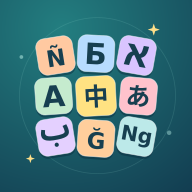

Bar’s Word AdventuresFree Hebrew voice samples
BlueTTS · generated locally · no paid APIThe female voice is now used for Hebrew narration in all three narrated games. Compare the two samples below. Both read the same instruction, letter names and words, with pauses between the three sections.
Male voice
What they say
מָה הָאוֹת הָרִאשׁוֹנָה בַּמִּלָּה הַזֹּאת?
אָלֶף. בֵּית. גִּימֶל. דָּלֶת. הֵא. וָו. זַיִן. חֵית.
בַּרְוָז. גֶּזֶר. חָתוּל. כֶּלֶב. תַּפּוּחַ.
The female BlueTTS voice was selected for the games. These samples demonstrate its instruction, letter names and words at the same pace as the published narration.
Back to the game